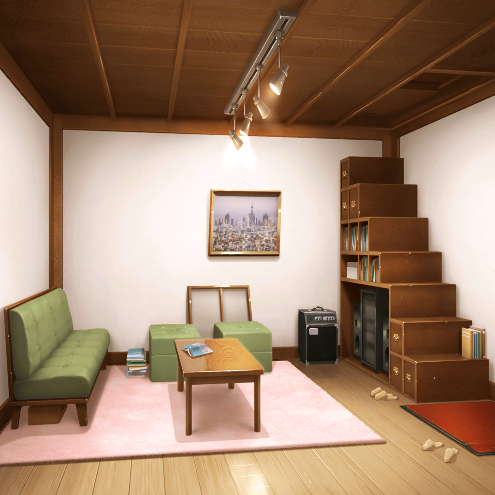
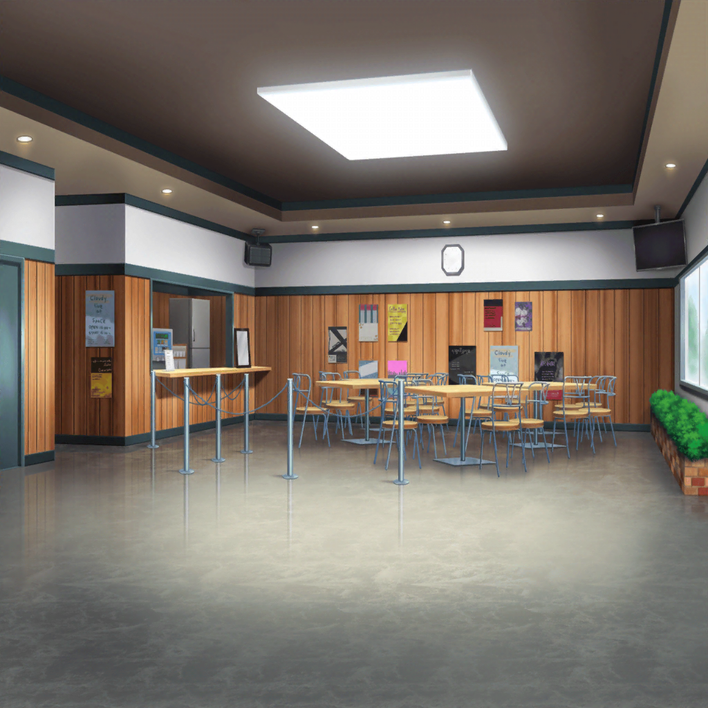
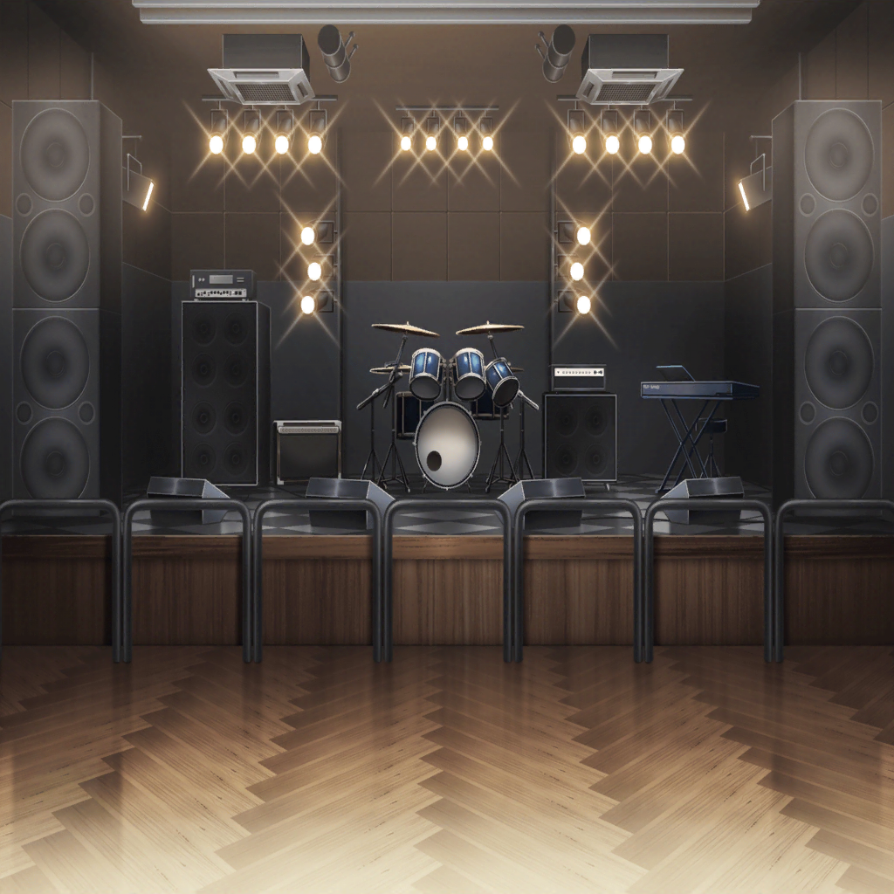

市ヶ谷家 蔵
たえ
ここに理想の花園ランドを建設するの。
こっちはオッちゃんの部屋。ドロちゃんはとなり部屋で……
りみ
おたえちゃん、戻ってきて〜！
有咲
なんだあれ？
沙綾
原因はやっぱりSPACE閉店かな？
有咲
重症だな、香澄も来ないし……
香澄
おはよ〜〜！ 遅れてごめんね！
沙綾
お、おはよう……
有咲
意外と元気……？
香澄
えへへー！
本番のライブで着る衣装を考えてきました！
りみ
このイラスト、香澄ちゃんが描いたの？
沙綾
へぇ、けっこうかわいい
りみ
でも、SPACEもうすぐなくなっちゃうのに……
香澄
まだなくならない！
香澄
オーディション、絶対合格しよう！
私、がんばるから！
沙綾
……うん。やれることまだまだあるよね。
落ち込むのは全部やってからにしよ
りみ
そうだね、みんなとお揃いの衣装着たいな
たえ
花園ランドはライブが終わってからにする
有咲
作らせねーし！
沙綾
それで、次はオーディション、いつ行く？
香澄
今日！
有咲・りみ・たえ・沙綾
え……？

SPACE ロビー
オーナー
……受かる気あんのかい？
香澄
あります！
オーナー
話にならない。足りてないよ、全然
香澄
ええっ……！
有咲
だから早いって言ったじゃん
香澄
足りないってなんだろう？
有咲
技術じゃないの？
りみ
でも、見てるのは技術じゃないって前に聞いたことあるよ？
香澄
……？
ねえ、みんな、ロビーのモニター見て！
有咲
モニター？ なんかバンドが映ってるけど？
たえ
今、オーディション受けてるバンドだよ。
SPACEは他のバンドのオーディションの様子が見れるの
沙綾
オーディション中のバンドは……あっ、CHiSPA！？

オーナー
ベースは走ってるし、ドラムは余裕がない。
キーボードとギターは勢いでごまかしてる
夏希・文華・真結・里実
……！
オーナー
……やりきったかい？
夏希・文華・真結・里実
……はい！
夏希
今、やれることは全部……やったつもりです！
オーナー
……合格
夏希
え……？
あ、は、はい！ ありがとうございます！
香澄
やった！ 合格合格！ すごいよ、なっちゃん！
有咲
マジか……
りみ
すごいすごいっ
沙綾
先行かれちゃったか〜
たえ
……何が違うんだろ？
たえ
私達とどう違ったんだろ。
ちゃんと返事できたから？ 曲がよかったから？
香澄・りみ
…………
ひなこ
…………
香澄
わあ！ ひなちゃん先輩！
ひなこ
ひなちゃん先輩だぜ、フゥーーッ！！
沙綾
なんでここに……！
ひなこ
ひなちゃん求めるところに、ひなちゃんあり……
そういう存在に、ひなちゃんはなりたい。
なりたいんだーーー！！
有咲
求めてないんですけど……
ひなこ
いいのかい、お嬢さんよぉ。
せーっかくオーディションに受かるコツを
教えてあげようと思ったのによぉ
香澄
えっ！ そんなのあるんですか！？
ひなこ
デートしてくれたら教えるー！
有咲
はあ！？
たえ
有咲、がんばって！
有咲
おまっ、ふざけんなっ！
香澄
はいはい、私も行く！
有咲
それもうデートでもなんでもねー！
ひなこ
やめて！ ひなちゃんを巡って争うのはやめて！
ゆり
ほらほら、困ってるからそのぐらいにしなよ
りみ
お姉ちゃん！
お姉ちゃんもオーディション見にきたの？
ゆり
うん、刺激になるからね
ひなこ
ポピパのオーディションも見てたよー！
沙綾
……あの、何がダメだったんでしょうか？
ひなこ
ん？
沙綾
私達に足りないものって……
りみ
受かるコツって？
ひなこ
まあ、デートは今度ってことにして、ひとつヒント！
一生懸命考えること！
りみ
考える……？
ゆり
音楽の正解はないよ。答えなんて、みんな違う。
ポピパはポピパの正解を見つけなくちゃね
香澄
一生懸命考える……
その夜
SPACE ロビー
香澄
こんばんは！
オーナー
……もう店は終わりだよ
香澄
はい、わかってます！
ただ、がんばろうって思ったら来ちゃって！
オーナー
がんばろうってオーディションのことかい？
練習なら家でやんな
香澄
はい、がんばります！
香澄
絶対にここでライブしたいから……！
キラキラドキドキしたいだけじゃなくて、
ここが、SPACEが好きだから！
オーナー
…………
香澄
お店を手伝ってみてわかったんです！
みんなが大好きで、オーナーも大好きなここが大好きだって！
オーナー
だったら納得いく演奏見せてみな
香澄
絶対やります！
オーナー
……あんた全然変わんないね。
前に聞いた時もそうだった
香澄
練習いっぱいしたし、失敗はしたけど楽しかったので……
オーナー
ふん、そういうところだけは褒めてやるよ
オーナー
けど、何も見えてない。周りも自分も
香澄
え？ どういうことですか？
オーナー
あんたが一番できてなかった
香澄
……！！
オーナー
もう帰んな
香澄
…………